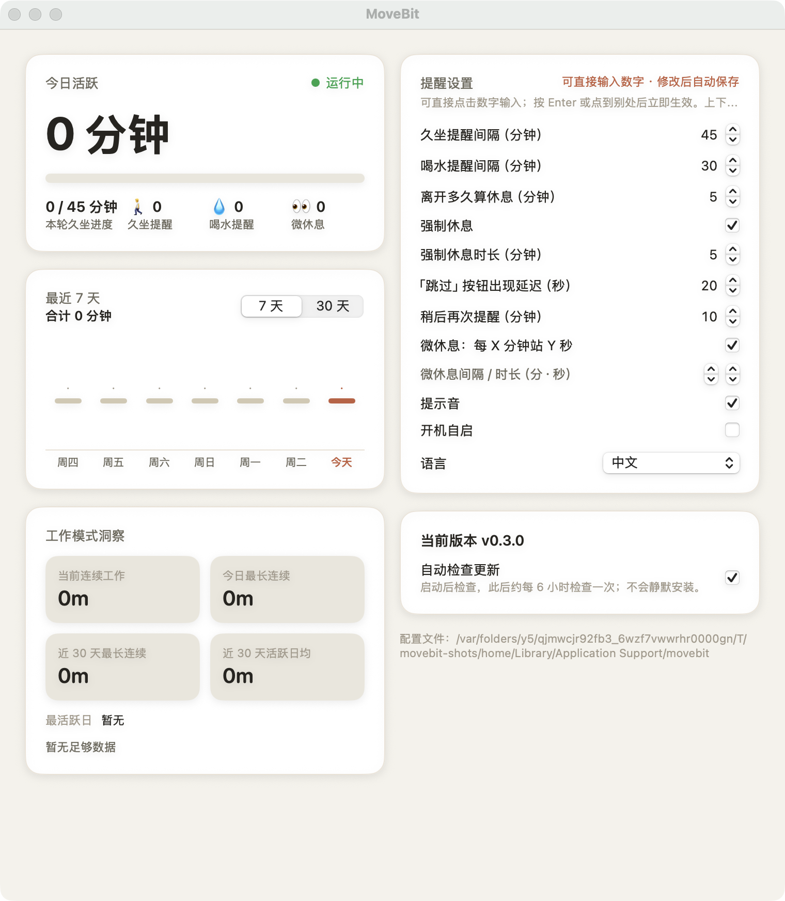

🚀五分钟上手
安装、打开、定一个久坐提醒。教程到这里就结束了——本页其余内容都是可选的。
- 安装。到 Releases 页下载：Windows 双击 .msi，macOS 把 .dmg 里的 MoveBit 拖进「应用程序」，Linux 用 .deb / .rpm / .AppImage。
- 首次启动。一个三步向导问你三件事：多久打断你一次（温和 / 标准 / 严格）、多久提醒喝水、要不要提示音。选完点「开始使用」。不想选就点「跳过」，全部用默认值。
- 设置第一个休息提醒。主窗口右侧「提醒设置」里，把「久坐提醒间隔」改成你要的分钟数（默认 45）。数字可以直接点进去改，按 Enter 或点别处立即生效，自动保存。
- 完成。关掉窗口，MoveBit 缩进托盘继续计时。到点它自己会来找你。

截图为真实的 macOS 版本。Windows 与 Linux 布局相同，窗口边框随平台风格。
⏱工作计时
MoveBit 统计你真正在操作电脑的活跃时间——键盘鼠标一停，计时就不再增长。
- 看今天。主窗口左上角「今日活跃」给出今天的活跃总时长，下方是本轮久坐进度（如 12 / 45 分钟）。
- 看趋势。「最近 7 天 / 30 天」图表显示每天的活跃分钟和休息次数，鼠标悬停看单日详情。
- 看模式。「工作模式洞察」卡片给出当前连续工作、今日最长连续和近 30 天概况。
🔒强制休息锁屏
久坐到点后，MoveBit 把所有显示器换成置顶的倒计时休息屏——这是它最硬核的功能，也是可关的。
- 开关与时长。「提醒设置」里保留「强制休息」勾选即启用；「强制休息时长」默认 5 分钟，可调 1–30 分钟。
- 休息中。倒计时结束自动解锁。「跳过」按钮延迟 20 秒出现（可调 0–120 秒），点它等于「稍后再提醒」（默认 10 分钟）。
- 不想要锁屏？取消「强制休息」勾选，久坐到点只弹通知条，不打断操作。
💧喝水与微休息
两个轻量提醒：喝水按独立周期循环，微休息建议你站起来看看远处。它们都不锁定屏幕。
- 喝水。「喝水提醒间隔」默认 30 分钟，到点弹一条「喝口水吧 💧」，点「知道了」收下，或「稍后 N 分钟」延后。
- 微休息。「微休息：每 X 分钟站 Y 秒」默认每 30 分钟提醒站 20 秒，点击或按 Esc 收起；它不打断久坐计时。
- 提示音。「提示音」只作用于弹窗；强制休息永远静默。
🫗托盘行为
MoveBit 平时住在系统托盘（菜单栏），不占任务栏——关掉窗口它仍在计时。
- 打开设置。点托盘水滴图标 →「设置与统计」，主窗口随即打开。
- 临时安静。托盘菜单 →「暂停提醒 1 小时」；会议结束点「恢复提醒」。
- 看进度。悬停托盘图标可看到今日活跃与久坐周期；右键菜单里也有「检查更新」和「退出 MoveBit」。
↻在线更新
更新检查默认开启：启动时一次，之后约每 6 小时一次。发现新版本后，下载、校验都由 MoveBit 完成，换新只等你一次点击。
- 手动检查。托盘菜单或「关于」卡片 →「检查更新」。
- 确认换新。发现新版本后点「更新并重启」——下载、SHA-256 校验自动完成后，MoveBit 退出、替换文件、重新启动。
- 自动检查可关。「关于」卡片取消「自动检查更新」勾选即可。
❓常见问题
数据存在哪？
配置和历史都在本机数据目录：macOS ~/Library/Application Support/movebit，Windows %APPDATA%\movebit，Linux ~/.config/movebit。想多设备合并统计，可在「关于」里把数据目录指到 Resilio / Syncthing 等同步文件夹，重启后生效。
需要注册账号吗？
不需要。没有账户，没有遥测；更新检查只访问 GitHub Releases。
支持哪些平台？
Windows x64、macOS（Apple silicon 与 Intel）、Linux x64 与 arm64。Linux Wayland 下提醒正常，但空闲检测退化为自然时间。
怎么改语言和主题？
语言：主窗口「提醒设置」最下方「语言」可选中文 / English / 跟随系统。深浅色：跟随系统外观设置（macOS「系统设置 → 外观」），应用内不再单独提供切换。
怎么卸载？
Windows：系统「设置 → 应用」卸载 MoveBit（便携版直接删目录）。macOS：把「应用程序」里的 MoveBit 拖进废纸篓。Linux：sudo apt remove movebit 或 sudo dnf remove movebit，AppImage 删文件即可。卸载不会删除数据目录；想彻底清除再手动删掉上面说的数据目录。
更新失败怎么办？
先重试一次：检查失败多半是网络问题。下载或校验失败时，MoveBit 会清掉半成品，当前版本不受影响。若提示「应用目录不可写」，说明安装位置没有写权限——装到用户目录，或改用便携版。实在不行，直接去 Releases 页手动下载安装，用户数据不会丢。